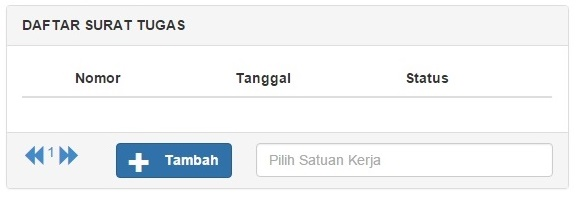
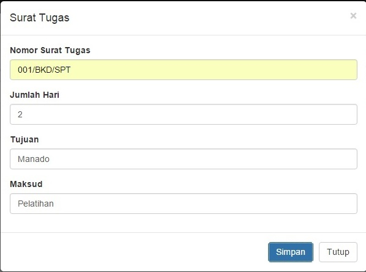

Menambah Data SPT
-
Klik tombol Tambah pada menu SPT untuk menambah data SPT.

-
Masukkan data SPT sesuai dengan form yang disediakan. Setelah berhasil menyimpan data SPT, data tersebut akan ditampilkan pada tabel.

-
Klik Simpan.